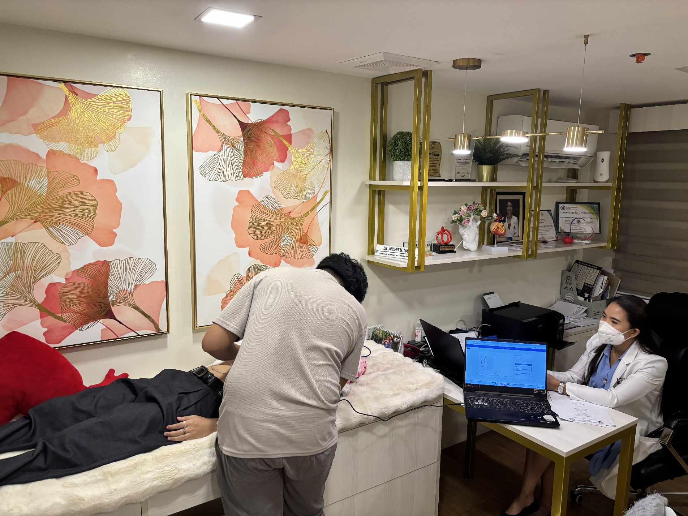
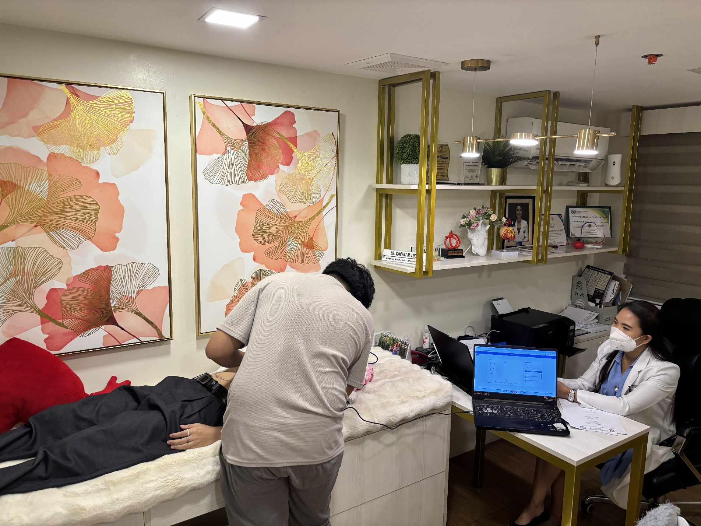

Electro-Oxi Gauge
Development of an IoT-based Portable Tool for Monitoring Heart Health
Project Overview

History
Development Phase
In Progress Development


Final Progress


 

Our Team

Meet Our Team

Tuazon, Anthony Jr.
Research Assistant
Bello, Kian Joshua
Research Assistant
Check Documents
Frequently Asked Questions
What is Electro-Oxi Gauge?
It’s an IoT-based portable device designed to monitor heart health in real-time.
How does Electro-Oxi Gauge work?
It uses biosensors to measure heart-related data and transmits it to an online dashboard.
What health parameters does the device track?
It tracks oxygen saturation (SpO2), heart rate, and ECG signals.
Is Electro-Oxi Gauge wearable?
Yes, it is compact and designed to be comfortably worn or carried.
Can it be used by people without medical training?
Absolutely not. As it requires the knowledge and advise of a medical professional.
Does it require internet to function?
Yes, for real-time data upload and monitoring via the web dashboard.
What kind of sensors are used in the device?
The device uses pulse oximeter, ECG sensor module, IR temperature sensor and microcontroller like Raspberry Pi.
Where is the data stored?
Data is stored in a cloud database that can be accessed via a web interface.
Can I export or download the collected data?
Yes, the system can be configured to allow data exports in formats like CSV.
How is power supplied to the device?
As of now, it is operated through DC connection. We put a recommendation to add portable power source for the future studies .
Who developed the Electro-Oxi Gauge?
It was developed by Computer Engineering students from the University of San Agustin, Iloilo City Campus.
Is this a commercial medical device?
No, it’s currently a research prototype intended for academic and experimental purposes.
Can this project be expanded?
Yes, future versions may include features like mobile app integration.